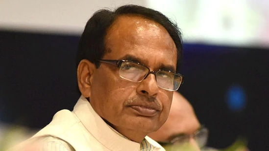

The chief minister insisted that it was necessary to maintain a balance in nature for conservation of wildlife and expressed his gratitude towards people for supporting the cause.
Madhya Pradesh Chief Minister Shivraj Singh Chouhan on Monday announced to double the ex-gratia in cases of people killed in attacks by wild animals from ₹4 lakh and ₹8 lakh.
The chief minister made the announcement while speaking to reporters in Bandhavgarh National Park. “In some unfortunate incidents of attacks on human beings by wild animals, some people lose their lives, and it is our endeavour that such incidents don't take place.